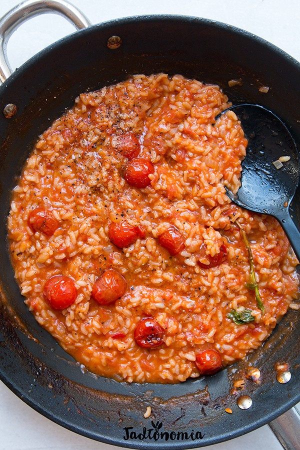

Czas przygotowania: do 45 minut
Składniki na 2 - 3 porcje:
100 g pomidorków koktajlowych
oliwa
1 cebula
1/2 ząbka czosnku
1/8 łyżeczki cynamonu
oliwa
1/2 szklanki ryżu do risotto, na przykład arborio
1/2 szklanki wytrawnego białego wina lub cydru, opcjonalnie
1 duża gałązka bazylii lub mała tymianku, opcjonalnie
2 pomidory bawole serca / 800 g
2 – 3 szklanki bulionu warzywnego
sól
2 łyżki płatków drożdżowych, opcjonalnie
do podania: oliwa, czarny pieprz
Przygotowanie:
Na dnie dużej patelni rozgrzać mało oliwy, wrzucić pomidorki koktajlowe i podsmażać je do momentu, aż zrobią się złote i zaczną lekko pękać, czyli około 5 – 7 minut. W tym czasie przygotować pozostałe składniki. W czajniku zagotować wodę. Skórę pomidorów naciąć, włożyć je do miski i zalać wrzątkiem. Po chwili wrzątek wylać, przelać je zimną wodą i skórkę obrać, nie wyrzucać. Posiekać w kostkę, a skórki oraz wykrojone gniazdo nasienne wrzucić do garnka, wlać bulion i delikatnie podgrzewać na małym ogniu. Cebulę pokroić w kostkę, czosnek w plasterki. Uff, akurat pomidorki powinny zacząć pękać i można razem z oliwą zsunąć ja na talerz i odłożyć na bok. Patelnię przetrzeć papierowym ręcznikiem i przejść do robienia risotto. Na patelnię wlać trochę oliwy, dodać cebulę, czosnek oraz cynamon i smażyć przez 1 – 2 minuty. Dodać ryż, chwilę podsmażać, po czym dodać gałązkę bazylii i białe wino. Kiedy wino odparuje dodać pomidory, szczyptę soli i dusić na średnim ogniu przez 5 – 8 minut – po tym czasie pomidory się rozpadną i lekko odparują, wtedy wlać pierwszą chochelką bulionu. Od teraz wlewać po 1 – 2 chochelki gorącego bulionu. Proces potrwa około 15 – 18 minut, risotto jest gotowe, kiedy ryż jest lekko al dente, kształtny, ale miękki i sprężysty. Do gotowego risotto dodać z powrotem podsmażone pomidorki, doprawić płatkami drożdżowymi oraz solą. Podawać od razu, skropione oliwą i czarnym pieprzem.
Propozycja podania:
